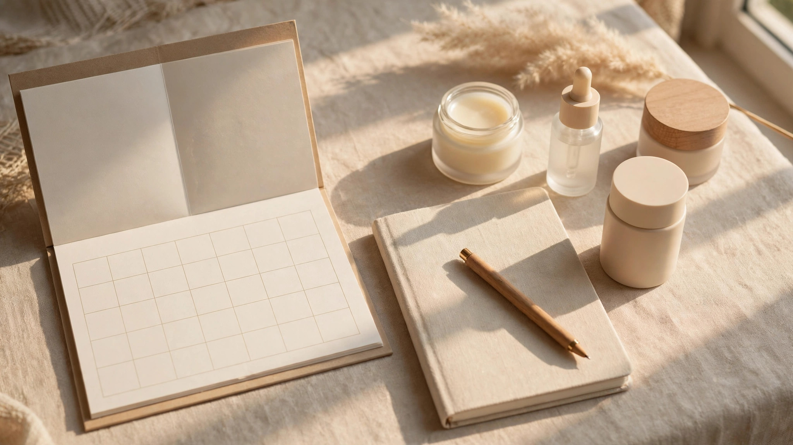

洗顔後はこれ1本で済ませたい — 振って使うオールインワン美容ミルク「ULU シェイクモイストミルク」の中身と使い方
条件確認｜公開日：2026年11月16日｜最終更新日：2026年11月20日｜情報確認日：2026年11月20日（確認：ULU公式ページ）
朝、洗面所の鏡の前に立つと、化粧水、乳液、美容液と、ボトルを何本も開けるのが面倒に感じる日があります。夜も同じで、疲れて帰った日は、保湿の手順をなるべく少なく済ませたい。
ULU（ウルウ）の「シェイクモイストミルク」は、洗顔後の保湿ケアを1本で済ませる設計のオールインワン美容ミルクです。この記事では価格の話の前に、まず「どんな商品で、どう使うのか」をメーカーが公表している情報をもとに整理します。価格と定期購入の条件は、最後にまとめて確認します。
公式ページの表示で確認してください
商品の正体：1本で5役、使う前に「振る」ミルク
ULU シェイクモイストミルクは、株式会社日本ドライスキン研究所が販売する一般化粧品（スキンケア）です。内容量は110mLで、約1ヶ月分です。
特徴は2つあります。
1つ目は1本で5つの役割を持つことです。ブースター（導入液）・化粧水・乳液・美容液・ふき取り化粧液の5役を1本が担います。洗顔後のケアを並べ替えたり重ねたりせず、この1本で終える設計です。
2つ目は使う前にボトルを振ることです。ULUは乳化剤（界面活性剤）を使っていないため、容器の中で水分と油分が2層に分かれています。使う前に振って混ぜてから出す、というひと手間が「シェイク」の名前の由来です。
保湿ケアとして使うほか、ふき取り洗顔としても使えます。
1本で済ませると、何が楽になるか
- 洗顔後の保湿ケアが、ボトルを何本も開けずに1本で終わる
- 手順は「振って、出す、なじませる」の3つだけ
- 保湿ケアのほか、ふき取り洗顔にも使える
- ヒト型セラミド5種などの保湿成分を、洗顔後の1ステップで補う設計
- 防腐剤・界面活性剤・香料・着色料などを使わないフリー処方
成分と処方
配合成分のうち、中心となるのは次のものです（全成分はメーカーの商品ページに掲載されています）。
- ヒト型セラミド5種（セラミド1・2・3・5・6Ⅱ）。セラミドは肌の水分を保つ細胞間脂質の主成分で、年齢や洗顔などによって減ったり流失したりする成分です。ULUには体内のセラミドと同じ構造の「ヒト型セラミド」が5種類配合されています。
- ヒアルロン酸Na。保湿成分として広く使われる成分です。
- スクワラン。肌表面を覆う皮脂膜の成分でもある油分で、「うるおいを逃がさず閉じ込める」役割があります。
- アンボラエキス（タンブリッサトリコフィラ葉エキス）。マダガスカル産の植物アンボラから得られるエキスが配合されています。
処方は「無添加」で、具体的には次の項目がフリー処方として挙げられています：防腐剤・界面活性剤・感触改良剤・香料・着色料・石油系原料を使わないこと、旧指定成分が無添加であること。
また、メーカーの公表では皮膚科専門医の監修による使用テスト、敏感肌の方の協力によるパッチテスト、アトピー素因の方の協力によるパッチテストが行われています。なお、これらのテストはすべての人に皮膚刺激が起きないことを保証するものではありません。
水については「特殊浸透水」と呼ばれる水を使っています。精製水をもとにした水で、配合した美容成分を角質層まで届けるための設計です（※この記事でいう「浸透」は、すべて角質層までの意味です）。
保湿ケアとしての位置づけ
ULU シェイクモイストミルクは、皮膚にうるおいを与え、皮膚の乾燥を防ぎ、肌を整えるための保湿ケアの化粧品です。ヒト型セラミドやヒアルロン酸などの保湿成分を、洗顔後の1ステップで補う設計で、肌にはりを与え、キメを整える働きも担います。
先に知っておきたい、合わない点
- 使う前に振る手間があります。乳化剤（界面活性剤）を使っていないため、容器の中で水分と油分が2層に分かれていて、振って混ぜてから出すのが前提の設計です。
- 香料を使わない処方です。香りを楽しむタイプの化粧品とは方向が異なります。
- 朝はこのあとにUVケア、夜は必要に応じてクリームを重ねる使い方で、肌の状態によっては1本だけで全てのケアが終わるわけではありません。
- 内容量は110mLで、約1ヶ月分が目安です。使用量が多いと、1ヶ月たたずに使い切ることがあります。
使い方と使う場面
使い方は洗顔後にこれ1本というシンプルな流れです。
- 朝のケア：洗顔（またはふき取り）のあと、振って混ぜたミルクを顔全体になじませ、そのあとにUVケアを重ねます。
- 夜のケア：クレンジング・洗顔のあとに同じく1本。必要に応じてクリームを重ねます。
場面として想像しやすいのは、「朝の支度を短くしたい日」と「夜、疲れて手順を減らしたい日」です。洗面台に何本も並べず、振って、出す、なじませる、で保湿ケアが終わる。その手順の少なさがこの商品の設計の中心です。
広告（afb経由）：ULUの公式ページ。価格と定期条件は公式ページの表示が最新です。
洗顔後はこれ1本。定期便は送料無料で届きます。
定期便は最低継続回数の定めがありません。
価格と定期購入の条件（最終確認）
ここまでの内容で関心を持った方のために、購入条件をまとめます（表示は2026年11月20日に確認したものです）。
| 項目 | 内容 |
|---|---|
| 通常便（単品） | 4,950円（税込）＋送料660円 |
| 定期便 | 初回・2回目以降とも 3,960円（税込）・送料無料 |
| お届け間隔 | 30日ごとが基本。30日／40日／50日／60日から選択可能 |
| 最低継続回数 | 定めなし |
| 解約・キャンセル | 次回お届け予定日の10日前までに連絡すれば可能 |
価格と条件は変わることがあります。申し込み時点の最終確認は公式ページの表示で行ってください。
広告（afb経由）：ULUの公式ページ。価格と定期条件は公式ページの表示が最新です。
初回も2回目以降も同額。送料はかかりません。
解約は、次回お届け予定日の10日前までに連絡すれば可能です。
解約と継続の不安に先に答えておく
- 定期便は、連絡をしない限り選んだ周期で届き続けます。最低継続回数の定めはないので回数の縛りはありませんが、止めるときは自分から連絡が必要です。
- 解約の締め日は、次回お届け予定日の10日前です。申し込み前に、締め日を手帳などに控えておくのがおすすめです。
- 定期購入の条件の読み方を詳しく知りたい方は条件確認の記事（ULU定期の申し込み前に確認する条件）もあわせてご覧ください。
まとめ
- ULU シェイクモイストミルクは、洗顔後の保湿ケアを1本で済ませる設計のオールインワン美容ミルク（1本で5役、振って使う2層式）
- 中身の中心はヒト型セラミド5種をはじめとする保湿成分と、フリー処方の列挙が公式に示されている処方
- うるおいを与え、乾燥を防ぎ、肌を整える保湿ケアとして位置づけた
- 価格と条件は上の表のとおり。定期便は初回も2回目以降も同額で、解約は次回お届け予定日の10日前までの連絡が条件
洗顔後の手順を減らしたい、ボトルを何本も開けるのが面倒に感じる。そんな日のケアを1本で済ませる設計の商品です。
広告（afb経由）：ULUの公式ページ。価格と定期条件は公式ページの表示が最新です。
定期便は初回も2回目以降も同じ3,960円、送料無料です。
最低継続回数の定めはありません。解約は次回お届け予定日の10日前までに連絡すればできます。
出典・注記
- 商品情報・価格・条件：ULU公式商品ページ（株式会社日本ドライスキン研究所、https://www.dryskin-lab.co.jp/item100 、2026年11月20日確認）
- 効能の表現範囲：厚生労働省「化粧品の効能の範囲の改正について」（平成23年7月21日 薬食発0721第1号）に基づき、当サイトで表現を調整しています。公式ページの表現をそのまま転載はしていません。
- 当サイトはULUを実際に使用した感想を掲載していません。本記事は公式に公表された情報の整理です。
ほかの記事
 条件確認ULU定期の申し込み前に確認する条件 — 価格・回数・解約の表示の読み方
条件確認ULU定期の申し込み前に確認する条件 — 価格・回数・解約の表示の読み方

条件確認定期購入コスメの総額比較の読み方 — 「初回○円」ではなく最低継続回数までの総額で比べる